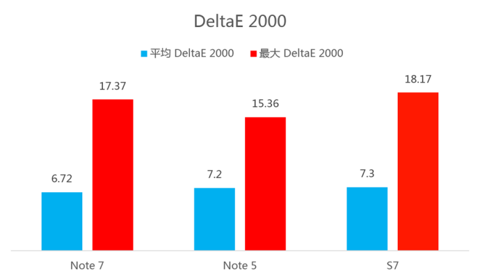

分类：手机探秘
2017年9月28日
过去我们在讨论三星 Galaxy 系列手机的屏幕时，一定会大谈特谈 Super AMOLED 屏幕的过去今生，把它和 LCD 屏幕透彻的进行一下对比，但如今似乎『曲面』则成为了一个更为重要的话题。
过去的 Note Edge 如果只是耕作前的试水，那去年的 S6 edge 和 Note edge 就是『果实成熟』的表现，而今年的 S7 edge 和 Note 7 则成为了我们所见过的巅峰作品。这也让我们又多了一个新的想象维度，未来的三星手机会是什么模样？
那今天我们就来看看最新发布的 Galaxy Note 7 屏幕表现到底如何。
三星 Galaxy Note 7 屏幕测试：
中心点最高亮度方面，Note 7 和 S7 类似，都在 370 nits 左右，而 Note 5 为 410 nits。 三款手机都有亮度增益功能，在强光刺激下，亮度都能达到 500 nits 以上。
三款手机的色温非常的一致，都在 7550 K 左右，说明三星的手机已经形成了明晰的色温取向。
亮度均一性方面，Note 7 没有特别大的起伏， 从左到右整体呈缓慢上升趋势。
色温均一性方面，Note 7 整体也比较平均，同样没有特别的高点或者低点。
色域方面，三者都超过了 100% NTSC，Note 7 相对于 Note 5 和 S7 略有所降低。
左右方向的可视角度方面，Note 7 相对于 Note 5 和 S7 展示出了压倒性的优势，而且这个数据已经刷新了数据库中的成绩。

平均 DeltaE 2000 方面，三者表现比较接近，Note 7 的成绩略好于 Note 5 和 S7 。三款手机的最大 DeltaE 2000 都出现在纯红色，说明这三款手机的红色过饱和都比较严重。不喜欢过饱和色彩的小伙伴们可以将手机设置为基本模式，此时色准会有大幅度的提高。
以下看一下 Note 7 在基本模式和自适应模式（默认模式）下的不同。
亮度方面，两种模式变化不大；色温方面则变化明显，基本模式下色温变为标准的 6500 K 左右。
基本模式下，色域也接近标准的 sRGB 色域。
基本模式下，平均 DeltaE 2000 和最大 DeltaE 2000 都有了明显的提高。
Note 7 的广色域屏幕配合三星的多种色彩模式，既能够让你感受到绚丽的色彩，也能秒变标准的 sRGB 模式；2K 的分辨率能带来超清晰的观感；而且三星这次新加入了过滤蓝光的功能。总的来说，三星 Note 7 的这块屏幕无愧于它旗舰机的身份。
相关阅读